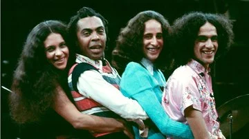

Como o jovem artista se tornou a nova era de Caetano Veloso?
Por: Alicia Cardozo e Nina Ricci Westphalen
No dia 18 de junho de 1991 nascia um dfos maiores símbolos da atual música popular brasileira, Martim Bernardes Pereira, mais conhecido como Tim Bernardes. Cantor, compositor e produtor brasileiro, construiu uma identidade artística com letras sensíveis e muito envolventes, que fazem o ouvinte se identificar em cada melodia. Mas afinal, o que ele significou para este século? Tim revoluciona o mercado músical, trazendo atualizações a MPB antiga, porém mantendo um esdtilo muito clássico e aconchegante, como Caetano Veloso. MUitos o comparam com o mestre por preservar o modelo icônico criado nos anos 70, o qual poucos artistas atuais atingiram. Caetano cria melodias universais, que todo o brasileiro conhece, e Tim cria um legado parecido. Além disso, se assemelham em estilo e mensagens, como na música "Recomeçar" de Tim e "Sampa" de Caetano, ambas retratando um olhar urbano e de mudanças, porém com perspectivas diferentes.
Fases e olhares
Por: Nome do autor
Tim Berdardes nasceu em meio a musica, com pai e irmão cantores cresceu com forte influencia musical, iniciou no ramo musical em 2009 com a formação da banda "O Terno" com Guilherme D'Almeida e Victor Chaves que ficou altamente conhecida na epoca, apos oito anos ele decidiu seguir carreira solo iniciando-a com o album Recomeçar